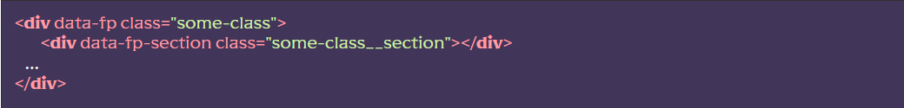
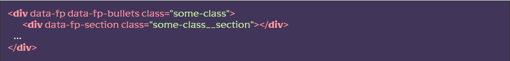
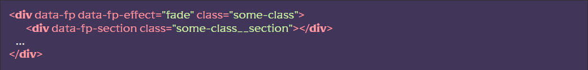

Підключення модуля
[JS] У файлі js/app.js раскомментировать строку import ‘./libs/fullpage.js’
[SCSS] У файлі src/scss/base.scss розкоментувати рядок @import “base/fullpage”;
[HTML] Використовувати сніпет fullpage або побудувати HTML-структуру самостійно:
Налаштування модуля
Буллети
Існує можливість додати кнопки перемикання секцій (буллети). Для цього до об’єкта з дата атрибутом data-fp додати дата атрибут data-fp-bullets
Ефекти перемикання
Для зміни ефекту перемикання, об’єкту з дата атрибутом data-fp додати дата атрибут data-fp-effect і як значення додати один із наступних параметрів fade, cards, slider (за замовчуванням)
